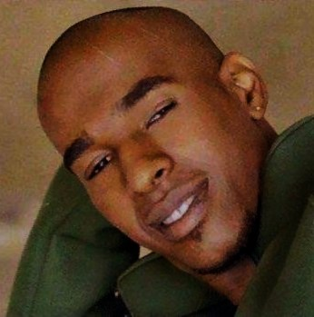

Há vozes que, mesmo depois da despedida, não se apagam. Atravessam o invisível, o tempo e a ausência, e continuam ecoando.
Edney Fernandes foi uma dessas vozes. Um artista que transformava sentimentos em melodia, cotidiano em poesia e memória em canção.
Este projeto é um reencontro entre passado e futuro: um espaço para preservar sua obra, apresentar sua trajetória e abrir caminho para novas vozes.
Alcance & Relevância
A permanência da obra
O catálogo de Edney Fernandes continua ativo no imaginário coletivo, em plataformas digitais, repertórios de intérpretes e no circuito afetivo do samba e do pagode.
+6Mde visualizações em interpretações das músicas do catálogo44obras registradas oficialmenteAnos 90–Hojepresença contínua no samba e pagode brasileiro
Catálogo em Editoras e Entidades
SONY MUSICWARNERPEER MUSICABRAMUSSONY MUSICWARNERPEER MUSICABRAMUS
Trajetória & Colaborações
Presença real no circuito da música brasileira
Entre projetos fonográficos, rodas de samba, estúdio e encontros artísticos, Edney Fernandes construiu uma trajetória viva dentro da música popular brasileira.

Ed & A Tripulação
Vocalista, violonista e compositor em um projeto marcante do pagode paulista.
Terra Brasil — Pagode de Mesa 3
Participação como produtor assistente e percussionista em projeto fonográfico relevante do gênero.
Obras autorais interpretadas por artistas relevantes do samba e do pagode brasileiro.
ExaltasambaPériclesThiaguinhoChrigorKarametadeGrupo PercepçãoImaginasambaKipaqueraGrupo Mi MenorExaltasambaPériclesThiaguinhoChrigorKarametadeGrupo PercepçãoImaginasambaKipaqueraGrupo Mi Menor
Discografia
Projetos que marcaram uma trajetória
Uma seleção de obras que apresenta a força artística de Edney Fernandes entre grupo, catálogo e projeto póstumo.
Prévias, registros e composições para apresentar a textura emocional da obra.
Arquivo Afetivo
Presenças que permanecem
Fotografias pessoais, encontros e fragmentos íntimos de uma trajetória que continua viva.
Curadoria & Estrutura
Uma iniciativa Laiá Music
Este projeto é responsável por organizar, preservar e ativar o legado artístico de Edney Fernandes.
Desenvolvido pela Laiá Music, o memorial transforma memória, obra e trajetória em um sistema vivo, conectando passado, presente e novas possibilidades dentro da música brasileira.